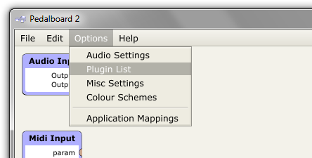
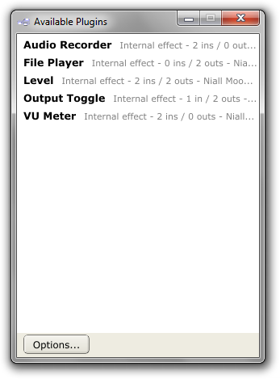
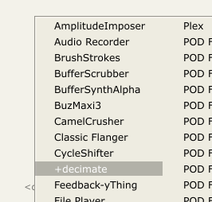
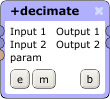
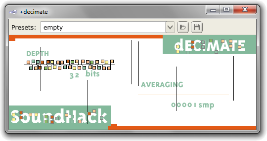
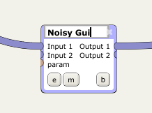
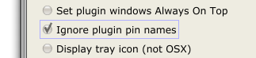

Plugins
The Pedalboard supports two audio plugin formats: VST 2.x (Windows and OSX), and AudioUnits (OSX-only), both of which are treated identically from the user's perspective. This page covers the details of how plugins are handled.
Plugin Scanning
To make the Pedalboard aware of the plugins on your system, you need to scan the directories where you keep your plugins. This is done via the Plugin List entry in the Options menu.

This will bring up the following window, from which you can choose to scan or remove plugins from the list via the Options... button.

One thing to note is that if, during the scan, the app encounters a misbehaving plugin which causes it to crash, the app will keep a note of it and ignore it the next time the scan is run. The list of misbehaving plugins is stored in the Pedalboard2 user directory, in the RecentlyCrashedPluginsList file. See the Pedalboard Files page for the location of the Pedalboard2 user directory on your system.
Adding Plugins to Your Patch
To add a plugin to your patch, you simply double-click somewhere in the main plugin field.

This will display a pop-up menu as above, from which you can select the plugin you're interested in by clicking on it.
Plugin Buttons
In the Pedalboard, plugins are represented by the following widget:

Input connections are on the left of the widget, output connections on the right. The buttons along the bottom of the widget are as follows:
e: Open the plugin's editor

This opens the plugin's editor in a separate window, as above. If a plugin does not implement its own custom editor, the Pedalboard will display a generic editor, with a slider for each of the plugin's parameters. The toolbar along the top of the window lets you switch between plugin preset settings. For more information on how the app handles plugin presets, see the Plugin Presets page.
m: Open the plugin's mappings window
{kind=link}
This opens the plugin's mappings window, as above. In addition to the parameter mapping options here, the MIDI channel control can be used to ensure the plugin will only respond to MIDI messages on a specific MIDI channel. For more information on mappings, see the MIDI Mappings and OSC Mappings pages.
b: Bypass the plugin
This is a toggle button which can be used to bypass the plugin (pass the plugin's input audio directly to its output uneffected). When bypassed, the plugin's 'b' is displayed in bold. Note that a plugin's bypass state can be mapped to MIDI or OSC parameters the same as any of its internal parameters.
x: Delete the plugin
Clicking this button will delete the plugin, as well as any connections or mappings associated with it.
Renaming Plugins
A feature which may come in useful with large patches, or patches which feature a number of otherwise identical plugins, is the ability to rename those plugins on the plugin field.

To rename a plugin, simply double-click its name, as seen above. Note that renaming a plugin will also resize its widget to fit the new name. A related feature which may be useful is the option to ignore a plugin's published port names. This is most useful for those plugins which have lengthy names for their inputs and outputs, as this can lead to extremely wide plugin widgets in the Pedalboard's plugin field. To toggle this option, select the Ignore plugin pin names option in Options->Misc Settings:
